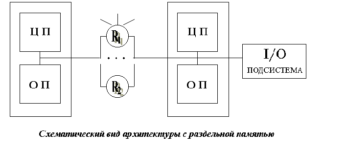

MPP архитектура
MPP архитектура (massive parallel processing) - массивно-параллельная архитектура.
Главная особенность такой архитектуры состоит в том, что память физически разделена.
В этом случае система строится из отдельных модулей, содержащих процессор, локальный банк
операционной памяти (ОП), два коммуникационных процессора (рутера) или сетевой адаптер,
иногда - жесткие диски и/или другие устройства ввода/вывода. Один рутер используется для
передачи команд, другой - для передачи данных. По сути, такие модули представляют собой
полнофункциональные компьютеры. (см. рис.). Доступ к банку ОП из данного модуля имеет только
процессоры (ЦП) из этого же модуля. Модули соединяются специальными коммуникационными каналами.
Пользователь может определить логический номер процессора, к которому он подключен, и организовать обмен
сообщениями с другими процессорами. Используются два варианта работы операционной системы (ОС) на машинах MPP архитектуры.
В одном, полноценная операционная система (ОС) работает только на управляющей машине (front-end), на каждом отдельном модуле работает
сильно урезанный вариант ОС, обеспечивающий работу только расположенной в нем ветви параллельного приложения. Во втором варианте, на
каждом модуле работает полноценная UNIX-подобная ОС, устанавливаемая отдельно на каждом модуле.

Главное преимущество:
- Главным преимуществом систем с раздельной памятью является хорошая масштабируемость: в отличие от SMP-систем в машинах с
раздельной памятью каждый процессор имеет доступ только к своей локальной памяти, в связи с чем не возникает необходимости в потактовой
синхронизации процессоров. Практически все рекорды по производительности на сегодняшний день устанавливаются на машинах именно
такой архитектуры, состоящих из нескольких тысяч процессоров (ASCI Red, Blue Pacific).
Недостатки:
- отсутствие общей памяти заметно снижает скорость межпроцессорного обмена, поскольку нет общей среды для хранения данных, предназначенных для обмена между процессорами. Требуется специальная техника программирования для реализации обмена сообщениями между процессорами.
- каждый процессор может использовать только ограниченный объем локального банка памяти.
- вследствие указанных архитектурных недостатков требуются значительные усилия для того, чтобы максимально использовать системные ресурсы. Именно этим определяется высокая цена программного обеспечения для массивно-параллельных систем с раздельной памятью.
Системами с раздельной памятью являются суперкомпьютеры IBM RS/6000 SP2, Intel PARAGON/ASCI Red, SGI/CRAY T3E, Hitachi SR8000,
транспьютерные системы Parsytec.
Машины последней серии CRAY T3E от SGI, основанные на базе процессоров Dec Alpha 21164 с пиковой производительностью
1200 Мфлопс/с (CRAY T3E-1200), способны масштабироваться до 2048 процессоров. Другая машина этой серии CRAY T3E-900 в
конфигурации 1248 процессоров, инсталлированная в правительстве США, показала на Linpack-тесте производительность, равную
634.2 Гфлопс/с.
При работе с MPP системами используют так называемую Massive Passing Programming Paradigm -парадигму программирования с передачей данных (MPI, PVM, BSPlib).


 [Назад]
[Оглавление]
[Вперед]
[Назад]
[Оглавление]
[Вперед]
Последнее обновление 8.02.2002 WebMaster